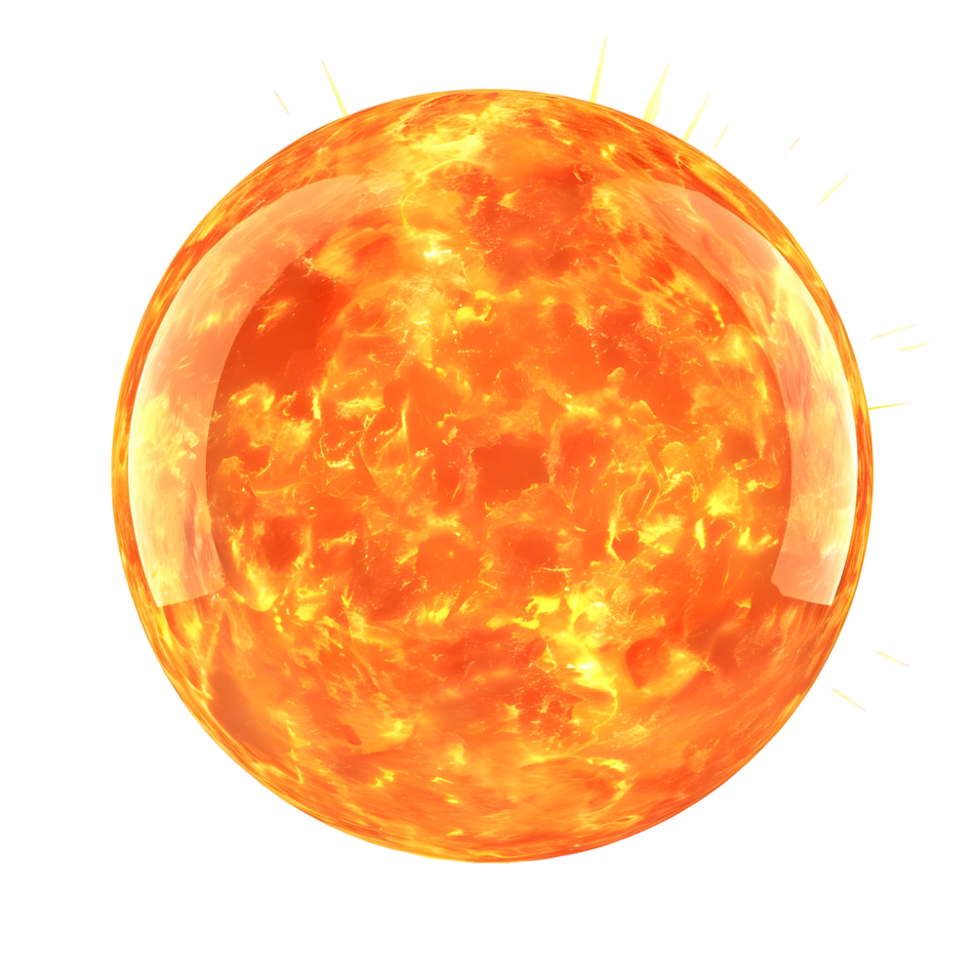

<meta charset="utf-8">
<title>Sun Cycle — słońce i księżyc z obrazków</title>
<style>
  :root {
    --bg: #0d1015; --surface: #151a22; --line: rgba(255,255,255,.08);
    --text: #e8ebf1; --muted: #96a0b0; --accent: #7cb3f9;
  }
  body { background: var(--bg); color: var(--text);
    font: 15px/1.55 system-ui, "Segoe UI", Roboto, sans-serif;
    margin: 0; padding: 28px 20px 64px; }
  main { max-width: 1240px; margin: 0 auto; display: flex; flex-direction: column; gap: 22px; }
  .lead h1 { font-size: 24px; font-weight: 750; margin: 0 0 6px; letter-spacing: -.2px; }
  .lead p { color: var(--muted); margin: 0 0 4px; max-width: 86ch; }
  .card { background: var(--surface); border: 1px solid var(--line); border-radius: 18px; padding: 18px; }
  .card h2 { margin: 0 0 4px; font-size: 17px; }
  .card > p { margin: 0 0 14px; color: var(--muted); font-size: 13.5px; max-width: 92ch; }

  .siatka { display: grid; grid-template-columns: repeat(2, 1fr); gap: 16px; }
  .wariant { display: flex; flex-direction: column; gap: 7px; }
  .wariant h3 { margin: 0; font-size: 13.5px; font-weight: 650; letter-spacing: .02em; }
  .wariant h3 em { font-style: normal; color: var(--muted); font-weight: 400; }
  .scene { position: relative; aspect-ratio: 16/9; border-radius: 14px; overflow: hidden;
    border: 1px solid var(--line); }
  .layer { position: absolute; inset: 0; }
  .rayclip { position: absolute; inset: 0; overflow: hidden; }
  .ray { position: absolute; inset: -45%; filter: blur(28px);
    animation: ray-sway 42s ease-in-out infinite; transition: opacity 1s linear; }
  @keyframes ray-sway { 0% { transform: rotate(-3deg); } 50% { transform: rotate(2.5deg); } 100% { transform: rotate(-3deg); } }
  @media (prefers-reduced-motion: reduce) { .ray, .moon svg, .moon img, .sun img { animation: none; } }

  /* Moon: the card's own 15% box. The SVG variant keeps the rendered glow and
     the terminator; the  variants put the PNG in the same box. */
  .moon { position: absolute; aspect-ratio: 1; transform: translate(-50%,-50%);
    pointer-events: none; transition: opacity 1s linear; }
  .moon svg, .moon img { display: block; width: 100%; height: 100%; overflow: visible;
    animation: moon-shimmer 7s ease-in-out infinite; }
  @keyframes moon-shimmer { 0%,100% { transform: scale(1); opacity: .86; } 50% { transform: scale(1.04); opacity: 1; } }

  /* Sun: no disc exists on the card today — the sky gradient's aureole is all
     there is. Here the PNG is placed so that its *disc* centre, not the image
     centre, lands on the projected position (the render has rays sticking out
     on one side, so the two differ). */
  .sun { position: absolute; pointer-events: none; transition: opacity 1s linear; }
  .sun img { display: block; width: 100%; height: auto;
    animation: sun-breathe 11s ease-in-out infinite; }
  @keyframes sun-breathe { 0%,100% { transform: scale(1); } 50% { transform: scale(1.025); } }

  .stars { position: absolute; inset: 0; overflow: hidden; transition: opacity .3s linear; }
  .stardrift { position: absolute; top: 0; left: 0; width: 200%; height: 100%;
    animation: stardrift 90s linear infinite; will-change: transform; }
  @keyframes stardrift { from { transform: translateX(-50%); } to { transform: translateX(0); } }
  .starhalf { position: absolute; top: 0; width: 50%; height: 100%; }
  .stars i { position: absolute; width: 3px; height: 3px; border-radius: 50%; background: #eaf3ff;
    animation: tw 3.4s ease-in-out infinite; }
  @keyframes tw { 0%,100% { opacity: .25; } 50% { opacity: 1; } }

  .controls { display: flex; align-items: center; gap: 16px; margin-top: 14px; flex-wrap: wrap; }
  #play { flex: none; width: 42px; height: 42px; border-radius: 50%; border: 1px solid var(--line);
    background: rgba(124,179,249,.13); color: var(--accent); font-size: 16px; cursor: pointer; }
  #play:hover { background: rgba(124,179,249,.22); }
  .sliderbox { flex: 1; min-width: 200px; }
  .sliderbox input[type=range] { width: 100%; min-width: 0; accent-color: var(--accent); }
  .ticks { display: flex; justify-content: space-between; margin-top: 2px; font-size: 11px;
    color: var(--muted); font-variant-numeric: tabular-nums; letter-spacing: .04em; }
  .przel { display: flex; gap: 14px; flex-wrap: wrap; font-size: 13px; color: var(--muted); }
  .przel label { display: inline-flex; align-items: center; gap: 6px; cursor: pointer; }
  .stan { min-width: 260px; font-size: 13px; }
  .stan b { font-size: 15px; }
  .stan span { color: var(--muted); font-variant-numeric: tabular-nums; }
  button.zwykly { border: 1px solid var(--line); background: rgba(124,179,249,.10); color: var(--accent);
    border-radius: 10px; padding: 7px 13px; font-size: 13px; cursor: pointer; }
  pre { margin: 12px 0 0; background: #0a0d12; border: 1px solid var(--line); border-radius: 12px;
    padding: 12px 14px; font: 12.5px/1.5 ui-monospace, monospace; color: #b9c4d4;
    overflow-x: auto; white-space: pre; }
  .note { font-size: 13px; color: var(--muted); background: #0a0d12; border: 1px solid var(--line);
    border-radius: 12px; padding: 12px 16px; }
  .note strong { color: var(--text); }
  .note code { color: #b9c4d4; font: 12.5px ui-monospace, monospace; }
  table.miary { border-collapse: collapse; font-size: 12.5px; margin-top: 8px; }
  table.miary th, table.miary td { border: 1px solid var(--line); padding: 4px 9px; text-align: left; }
  table.miary th { color: var(--muted); font-weight: 500; }
  table.miary td { font-variant-numeric: tabular-nums; }
</style>
<main>
  <div class="lead">
    <h1>Tło: słońce i księżyc z obrazków zamiast z rendera</h1>
    <p>Karta <code>sun-cycle-bg</code> nie ma dziś tarczy słońca — słońce to sama poświata
    (gradient w tle) plus wachlarz promieni. Księżyc jest rysowany w SVG: krążek z fazą
    i własną poświatą. Tutaj w to samo miejsce wchodzą <code>sun.png</code> i
    <code>moon.png</code>, a <b>cała poświata zostaje z rendera</b>: pasmo zmierzchu przy
    horyzoncie, aureola tarczy, wachlarz promieni i halo księżyca. Każda scena liczy
    prawdziwą pozycję Słońca i Księżyca — te same wzory, które siedzą w karcie.</p>
  </div>

  <section class="card">
    <h2>Cztery warianty, ta sama chwila</h2>
    <p>Suwaki i „play” sterują wszystkimi czterema naraz. Godzina, dzień roku i szerokość
    geograficzna są wspólne, więc różnica między kafelkami to wyłącznie sposób rysowania tarcz.</p>
    <div class="siatka" id="siatka"></div>

    <div class="controls">
      <button id="play" aria-label="Odtwórz dobę" title="Odtwórz dobę">▶</button>
      <div class="przel" id="pory">
        <button class="zwykly" data-t="710">południe</button>
        <button class="zwykly" data-t="1150">zachód</button>
        <button class="zwykly" data-t="1210">noc z księżycem</button>
      </div>
      <div class="sliderbox">
        <input type="range" id="t" min="0" max="1440" value="1150" step="1" aria-label="Godzina">
        <div class="ticks"><span>00:00</span><span>06:00</span><span>12:00</span><span>18:00</span><span>24:00</span></div>
      </div>
      <div class="sliderbox">
        <input type="range" id="d" min="0" max="364" value="231" step="1" aria-label="Dzień roku">
        <div class="ticks"><span>sty</span><span>kwi</span><span>lip</span><span>paź</span><span>gru</span></div>
      </div>
      <div class="sliderbox" style="max-width:170px">
        <input type="range" id="lat" min="0" max="66" value="52" step="1" aria-label="Szerokość">
        <div class="ticks"><span>0°</span><span>66°</span></div>
      </div>
      <div class="stan"><b id="faza">—</b><br><span id="info"></span></div>
    </div>

    <div class="controls">
      <div class="sliderbox" style="max-width:240px">
        <input type="range" id="sunw" min="4" max="26" value="11" step="0.5" aria-label="Wielkość słońca">
        <div class="ticks"><span>tarcza słońca</span><span id="sunwv">11%</span></div>
      </div>
      <div class="sliderbox" style="max-width:240px">
        <input type="range" id="moonw" min="4" max="26" value="15" step="0.5" aria-label="Wielkość księżyca">
        <div class="ticks"><span>tarcza księżyca</span><span id="moonwv">15%</span></div>
      </div>
      <div class="przel">
        <label><input type="checkbox" id="glow" checked> poświata z rendera</label>
        <label><input type="checkbox" id="rays" checked> wachlarz promieni</label>
        <label><input type="checkbox" id="starsOn" checked> gwiazdy</label>
        <label><input type="checkbox" id="sunAlways"> słońce mimo nocy</label>
      </div>
      <button class="zwykly" id="wypisz">wypisz ustawienia</button>
    </div>
    <pre id="wynik" hidden></pre>
  </section>

  <section class="card">
    <h2>Co siedzi w obrazkach</h2>
    <p>Zmierzone z kanału alfa, nie oszacowane — od tego zależy, gdzie ląduje środek tarczy
    i jak duży jest kadr.</p>
    <table class="miary">
      <tr><th>plik</th><th>rozmiar</th><th>tarcza (px)</th><th>środek tarczy</th><th>co jeszcze w pliku</th></tr>
      <tr><td>sun.png</td><td>980 × 980</td><td>773 × 771 (x 112–884, y 90–860)</td><td>498, 475</td>
          <td>wypalone kreski promieni, wychodzą poza tarczę do x 931 / y 34</td></tr>
      <tr><td>moon.png</td><td>1080 × 720</td><td>463 (x 309–771, y 128–591)</td><td>540, 360</td>
          <td>wypalona miękka poświata, alfa schodzi do zera dopiero przy x 271</td></tr>
    </table>
    <p class="note" style="margin-top:12px">
      <strong>Dwie konsekwencje.</strong> Środek tarczy słońca nie leży w środku pliku
      (promienie są niesymetryczne), więc obrazek jest przesuwany o zmierzone
      <code>50,8% / 48,5%</code> własnej wielkości, a nie o <code>50% / 50%</code> —
      inaczej słońce siedziałoby obok swojej aureoli. Księżyc ma własną poświatę
      wypaloną w pliku, więc razem z halo z rendera świeci podwójnie; przełącznik
      „poświata z rendera” pokazuje różnicę.
    </p>
  </section>

  <p class="note">
    <strong>Warianty:</strong>
    <b>R</b> — dzisiejszy render (brak tarczy słońca, księżyc z SVG).
    <b>A</b> — obrazki wstawione wprost; księżyc zawsze w pełni, bo PNG jest w pełni.
    <b>B</b> — obrazek księżyca przycięty terminatorem, więc faza dalej działa, a PNG służy
    za teksturę oświetlonej części.
    <b>C</b> — jak B, plus tarcze dostrajane do palety nieba (słońce czerwienieje i gaśnie
    przy horyzoncie, księżyc blednie o zmierzchu), żeby obrazek nie wyglądał na naklejony.
    <br><strong>Słońce znika przy −3°</strong> — projekcja karty przykleja tarczę do dolnej
    krawędzi zamiast wyprowadzić ją poza kadr, więc bez wygaszania świeciłaby przez całą noc.
    <br><strong>Tarcze nie świecą razem.</strong> Słońce gaśnie do −3°, a księżyc zapala się
    dopiero, gdy niebo ściemnieje — dla 20 sierpnia i 52°N najlepsza wspólna chwila to
    <code>0,11 × 0,09</code> krycia, czyli praktycznie nic. Stąd trzy skróty: „południe"
    pokazuje tarczę słońca wysoko, „zachód" nisko nad pasmem zmierzchu, „noc z księżycem"
    — księżyc w pełnym kryciu. Przełącznik „słońce mimo nocy" wymusza krycie 1, żeby
    obejrzeć sam obrazek na dowolnym niebie.
</main>

<script>
  // ---- palette + astronomy: the same tables and series as sun-cycle-bg.js ----
  const STOPS = [
    {e:-18, name:'Noc',            top:[11,16,32],   mid:[10,14,24],   bot:[7,10,18],    halo:[190,205,235,0], stars:1},
    {e:-9,  name:'Świt astro',     top:[17,24,48],   mid:[14,19,38],   bot:[10,13,24],   halo:[220,160,150,.22], stars:.65},
    {e:-4,  name:'Brzask / zmierzch', top:[28,36,64], mid:[35,42,72],  bot:[51,44,78],   halo:[235,150,130,.45], stars:.2},
    {e:0,   name:'Wschód / zachód', top:[43,63,102], mid:[49,72,111],  bot:[39,64,100],  halo:[255,170,95,.58], stars:0},
    {e:7,   name:'Złota godzina',  top:[74,118,166], mid:[63,107,157], bot:[43,79,121],  halo:[255,205,130,.52], stars:0},
    {e:22,  name:'Dzień',          top:[111,166,212],mid:[72,121,159], bot:[38,73,111],  halo:[255,235,180,.55], stars:0},
    {e:52,  name:'Południe',       top:[127,178,220],mid:[76,126,173], bot:[38,73,111],  halo:[255,245,215,.6], stars:0},
  ];
  const lerp = (a,b,t) => a + (b-a)*t;
  const lerpA = (a,b,t) => a.map((v,i) => lerp(v, b[i], t));
  function paletteFor(elev) {
    if (elev <= STOPS[0].e) return STOPS[0];
    if (elev >= STOPS[STOPS.length-1].e) return STOPS[STOPS.length-1];
    let i = 0; while (STOPS[i+1].e < elev) i++;
    const a = STOPS[i], b = STOPS[i+1], t = (elev - a.e) / (b.e - a.e);
    return { name: t < .5 ? a.name : b.name,
      top: lerpA(a.top,b.top,t), mid: lerpA(a.mid,b.mid,t), bot: lerpA(a.bot,b.bot,t),
      halo: lerpA(a.halo,b.halo,t), stars: lerp(a.stars,b.stars,t) };
  }
  const rgb = (c) => `rgb(${c.slice(0,3).map(Math.round).join(',')})`;
  const rgba = (c) => `rgba(${c.slice(0,3).map(Math.round).join(',')},${c[3].toFixed(3)})`;
  const D2R = Math.PI/180, R2D = 180/Math.PI;
  const clamp = (v,lo,hi) => Math.max(lo, Math.min(hi, v));
  const smoothstep = (x) => x*x*(3-2*x);

  function julian(dt) {
    let y = dt.getUTCFullYear(), m = dt.getUTCMonth()+1;
    const d = dt.getUTCDate() + (dt.getUTCHours() + dt.getUTCMinutes()/60)/24;
    if (m <= 2) { y -= 1; m += 12; }
    const A = Math.floor(y/100), B = 2 - A + Math.floor(A/4);
    return Math.floor(365.25*(y+4716)) + Math.floor(30.6001*(m+1)) + d + B - 1524.5;
  }
  const gmst = (J) => (280.46061837 + 360.98564736629*(J-2451545)) % 360;
  function altaz(ra, dec, J, lat, lon) {
    const H = ((gmst(J)+lon-ra)%360)*D2R, dr = dec*D2R, pr = lat*D2R;
    const alt = Math.asin(Math.sin(dr)*Math.sin(pr) + Math.cos(dr)*Math.cos(pr)*Math.cos(H));
    const az = Math.atan2(-Math.sin(H)*Math.cos(dr),
                          Math.cos(pr)*Math.sin(dr) - Math.sin(pr)*Math.cos(dr)*Math.cos(H));
    return { alt: alt*R2D, az: ((az*R2D)%360+360)%360 };
  }
  function sunEq(J) {
    const n = J-2451545, L = (280.460+0.9856474*n)%360;
    const g = ((357.528+0.9856003*n)%360)*D2R;
    const lam = ((L + 1.915*Math.sin(g) + 0.020*Math.sin(2*g))%360)*D2R, eps = 23.439*D2R;
    return { ra: ((Math.atan2(Math.cos(eps)*Math.sin(lam), Math.cos(lam))*R2D)%360+360)%360,
             dec: Math.asin(Math.sin(eps)*Math.sin(lam))*R2D, lam: lam*R2D };
  }
  function moonEq(J) {
    const T = (J-2451545)/36525, s = (x) => Math.sin(x*D2R);
    const Lp=(218.316+481267.8813*T)%360, M=(357.529+35999.0503*T)%360;
    const Mp=(134.963+477198.8676*T)%360, D=(297.850+445267.1115*T)%360, F=(93.272+483202.0175*T)%360;
    const lam = (Lp + 6.289*s(Mp) + 1.274*s(2*D-Mp) + 0.658*s(2*D) + 0.214*s(2*Mp)
      - 0.186*s(M) - 0.114*s(2*F) + 0.059*s(2*D-2*Mp) + 0.057*s(2*D-M-Mp)
      + 0.053*s(2*D+Mp) + 0.046*s(2*D-M) - 0.041*s(M-Mp) - 0.035*s(D) - 0.031*s(M+Mp))%360;
    const beta = 5.128*s(F) + 0.281*s(Mp+F) - 0.278*s(F-Mp) + 0.176*s(2*D-F)
      - 0.075*s(2*F-Mp) - 0.041*s(Mp-2*F);
    const eps=23.439*D2R, lr=lam*D2R, br=beta*D2R;
    return { ra: ((Math.atan2(Math.sin(lr)*Math.cos(eps)-Math.tan(br)*Math.sin(eps), Math.cos(lr))*R2D)%360+360)%360,
             dec: Math.asin(Math.sin(br)*Math.cos(eps)+Math.cos(br)*Math.sin(eps)*Math.sin(lr))*R2D,
             lam: (lam+360)%360 };
  }

  const AZ0 = 50, AZ1 = 310;
  const project = (alt, az) => ({
    x: clamp((az-AZ0)/(AZ1-AZ0), -0.05, 1.05)*100,
    y: 92 - clamp((alt+6)/60, -0.1, 1)*86
  });
  function rayGradient(x, y, bands, softness, peak) {
    const steps = bands*10, stops = [];
    for (let i = 0; i <= steps; i++) {
      const u = i/steps;
      const wave = Math.pow(Math.max(0, Math.cos(u*bands*2*Math.PI)), softness);
      stops.push(`rgba(255,238,205,${(wave*peak).toFixed(3)}) ${(u*360).toFixed(1)}deg`);
    }
    return `conic-gradient(from 23deg at ${x.toFixed(1)}% ${y.toFixed(1)}%, ${stops.join(',')})`;
  }
  const litPath = (k) => `M 0,-1 A 1,1 0 0 1 0,1 A ${Math.abs(1-2*k).toFixed(4)},1 0 0 ${k>0.5?1:0} 0,-1 Z`;

  // ---- measured image geometry (PIL, alpha channel) -------------------------
  // sun.png 980x980, disc x 112..884 / y 90..860  -> centre 498,475, d = 773
  const SUN = { w: 980, h: 980, d: 773, cx: 498, cy: 475 };
  // moon.png 1080x720, solid disc x 309..771 / y 128..591 -> centre 540,360, d = 463
  const MOON = { w: 1080, h: 720, d: 463, cx: 540, cy: 360 };
  // the  is sized by its disc, so the whole file is this much wider:
  const SUN_SCALE = SUN.w / SUN.d;                       // 1.2678
  const SUN_OFF_X = (SUN.cx / SUN.w) * 100;              // 50.816 %
  const SUN_OFF_Y = (SUN.cy / SUN.h) * 100;              // 48.469 %
  // moon SVG: map the file onto the unit circle of the phase mask
  const MOON_VW = 2 * MOON.w / MOON.d, MOON_VH = 2 * MOON.h / MOON.d;
  const MOON_VX = -1 - (MOON.cx - MOON.d/2) / MOON.d * 2;
  const MOON_VY = -1 - (MOON.cy - MOON.d/2) / MOON.d * 2;

  const WARIANTY = [
    ['R', 'render — tak jak dziś', 'brak tarczy słońca, księżyc rysowany w SVG'],
    ['A', 'obrazki wprost', 'PNG słońca i księżyca, bez fazy'],
    ['B', 'obrazki + faza', 'PNG księżyca przycięty terminatorem'],
    ['C', 'obrazki + faza + paleta', 'tarcze dostrajane do koloru nieba'],
  ];

  // ---- build the four scenes ------------------------------------------------
  const siatka = document.getElementById('siatka');
  const sceny = {};
  for (const [id, tytul, opis] of WARIANTY) {
    const box = document.createElement('div');
    box.className = 'wariant';
    box.innerHTML =
      `<h3>${id} — ${tytul} <em>· ${opis}</em></h3>` +
      `<div class="scene">` +
        `<div class="layer sky"></div>` +
        `<div class="stars"></div>` +
        `<div class="moon"></div>` +
        `<div class="sun"></div>` +
        `<div class="rayclip"><div class="ray"></div></div>` +
      `</div>`;
    siatka.appendChild(box);
    const sc = box.querySelector('.scene');
    sceny[id] = {
      sky: sc.querySelector('.sky'), stars: sc.querySelector('.stars'),
      moon: sc.querySelector('.moon'), sun: sc.querySelector('.sun'),
      ray: sc.querySelector('.ray'),
    };
    // stars: one drifting strip per scene
    const halfA = document.createElement('div'); halfA.className = 'starhalf'; halfA.style.left = '0';
    for (let i = 0; i < 55; i++) {
      const s = document.createElement('i');
      s.style.left = (Math.random()*100)+'%'; s.style.top = (Math.random()*100)+'%';
      s.style.animationDelay = (Math.random()*3.4)+'s';
      s.style.transform = 'scale('+(0.5+Math.random())+')';
      halfA.appendChild(s);
    }
    const halfB = halfA.cloneNode(true); halfB.style.left = '50%';
    const drift = document.createElement('div'); drift.className = 'stardrift';
    drift.appendChild(halfA); drift.appendChild(halfB);
    sceny[id].stars.appendChild(drift);

    // moon markup per variant
    if (id === 'R') {
      sceny[id].moon.innerHTML = moonSVG(false, id);
    } else if (id === 'A') {
      sceny[id].moon.innerHTML = moonSVG(true, id, true) ;
    } else {
      sceny[id].moon.innerHTML = moonSVG(true, id);
    }
    // sun markup: every variant except R gets the PNG
    if (id !== 'R') sceny[id].sun.innerHTML = '';
  }

  /* Moon markup.
     png=false -> the card's current drawing: glow + dark disc + lit path.
     png=true  -> the same glow and dark disc, with the PNG as the lit region.
     full=true -> no terminator at all (the PNG's own full disc).
     The mask rotates so the bright limb faces the sun; the image counter-rotates
     so the maria stay upright. */
  function moonSVG(png, id, full) {
    const glow =
      `<defs><radialGradient id="mg-${id}">` +
      `<stop offset="0%" stop-color="rgba(226,238,255,0.40)"/>` +
      `<stop offset="38%" stop-color="rgba(210,226,252,0.13)"/>` +
      `<stop offset="100%" stop-color="rgba(198,215,242,0)"/></radialGradient>` +
      (png && !full ? `<clipPath id="mc-${id}"><path class="lit"/></clipPath>` : '') +
      `</defs><circle class="halo" r="2.6" fill="url(#mg-${id})"/>`;
    const dark = `<circle r="1" fill="rgba(126,142,175,0.16)"/>`;
    const img = `<image href="assets/moon.png" x="${MOON_VX.toFixed(4)}" y="${MOON_VY.toFixed(4)}" ` +
      `width="${MOON_VW.toFixed(4)}" height="${MOON_VH.toFixed(4)}"/>`;
    let body;
    if (!png) body = dark + `<path class="lit" fill="#f4f8ff"/>`;
    else if (full) body = img;
    else body = dark + `<g class="obrot"><g clip-path="url(#mc-${id})">` +
      `<g class="kontr">${img}</g></g></g>`;
    return `<svg viewBox="-2.6 -2.6 5.2 5.2">${glow}${body}</svg>`;
  }

  // ---- one frame ------------------------------------------------------------
  const el = (id) => document.getElementById(id);
  function apply(st) {
    const { sun, moon, k, p } = st;
    const e = sun.alt;
    const sp = project(sun.alt, sun.az), mp = project(moon.alt, moon.az);
    const glowOn = el('glow').checked, raysOn = el('rays').checked, starsOn = el('starsOn').checked;
    const sunW = +el('sunw').value, moonW = +el('moonw').value;

    // twilight band + disc aureole + sky gradient — verbatim from the card (1.2.0)
    const u = clamp(1-(e+8)/20,0,1), bandW = 70+120*u, bandH = 26+16*u;
    const bandA = smoothstep(clamp(1-Math.abs(e+1)/14,0,1));
    const discA = smoothstep(clamp((e+2)/8,0,1));
    const day = smoothstep(clamp((e-2)/12,0,1));
    const dw = 26+(38-26)*day, dh = 46+(62-46)*day;
    const ha = (m) => rgba([p.halo[0],p.halo[1],p.halo[2],p.halo[3]*m*(glowOn?1:0)]);
    const tlo =
      `radial-gradient(${bandW.toFixed(0)}% ${bandH.toFixed(0)}% at ${sp.x.toFixed(1)}% 100%, ` +
      `${ha(0.85*bandA)} 0%, ${ha(0.32*bandA)} 38%, ${ha(0.07*bandA)} 70%, transparent 100%),` +
      `radial-gradient(${dw.toFixed(0)}% ${dh.toFixed(0)}% at ${sp.x.toFixed(1)}% ${sp.y.toFixed(1)}%, ` +
      `${ha(discA)} 0%, ${ha((0.35+0.07*day)*discA)} ${(28*(0.74+0.26*day)).toFixed(0)}%, ` +
      `${ha(0.12*discA*day)} 62%, transparent 100%),` +
      `linear-gradient(200deg, ${rgb(p.top)} 0%, ${rgb(p.mid)} 48%, ${rgb(p.bot)} 100%)`;

    const rx = (sp.x+45)/1.9, ry = (sp.y+45)/1.9;
    const horizon = smoothstep(clamp(1-Math.abs(e)/22,0,1)) * smoothstep(clamp((e+6)/6,0,1));
    const rayBg = horizon > 0.01 ? rayGradient(rx, ry, 5, 0.5, 0.5) : '';

    // The projection parks anything below the horizon on the bottom edge, so the
    // sun disc has to be faded out on its own — otherwise it glows all night.
    const sunA = el('sunAlways').checked ? 1 : smoothstep(clamp((e+3)/6, 0, 1));
    const moonA = clamp((-e-1)/8,0,1) * clamp((moon.alt+2)/8,0,1);
    const ang = Math.atan2(sp.y-mp.y, sp.x-mp.x)*R2D;

    for (const [id] of WARIANTY) {
      const s = sceny[id];
      s.sky.style.background = tlo;
      s.ray.style.opacity = (raysOn ? horizon*0.5 : 0).toFixed(3);
      s.ray.style.transformOrigin = `${rx.toFixed(1)}% ${ry.toFixed(1)}%`;
      if (rayBg) s.ray.style.background = rayBg;
      s.stars.style.opacity = (starsOn ? p.stars : 0).toFixed(2);

      // --- moon
      s.moon.style.width = moonW + '%';
      s.moon.style.left = mp.x.toFixed(1)+'%';
      s.moon.style.top = mp.y.toFixed(1)+'%';
      s.moon.style.opacity = moonA.toFixed(2);
      const halo = s.moon.querySelector('.halo');
      if (halo) halo.setAttribute('opacity', glowOn ? '1' : '0');
      const lit = s.moon.querySelector('.lit');
      if (lit) lit.setAttribute('d', litPath(k));
      if (id === 'R' && lit) lit.setAttribute('transform', `rotate(${ang.toFixed(1)})`);
      const obrot = s.moon.querySelector('.obrot'), kontr = s.moon.querySelector('.kontr');
      if (obrot) obrot.setAttribute('transform', `rotate(${ang.toFixed(1)})`);
      if (kontr) kontr.setAttribute('transform', `rotate(${(-ang).toFixed(1)})`);
      s.moon.style.filter = id === 'C'
        ? `brightness(${lerp(0.82, 1.04, clamp((-e-2)/10,0,1)).toFixed(3)}) ` +
          `saturate(${lerp(0.7, 1, clamp((-e-2)/10,0,1)).toFixed(3)})`
        : '';

      // --- sun
      if (id === 'R') continue;
      s.sun.style.width = (sunW * SUN_SCALE).toFixed(2) + '%';
      s.sun.style.left = sp.x.toFixed(1)+'%';
      s.sun.style.top = sp.y.toFixed(1)+'%';
      s.sun.style.transform = `translate(-${SUN_OFF_X.toFixed(3)}%, -${SUN_OFF_Y.toFixed(3)}%)`;
      s.sun.style.opacity = sunA.toFixed(2);
      s.sun.style.filter = id === 'C'
        ? `brightness(${lerp(0.86, 1.06, day).toFixed(3)}) ` +
          `saturate(${lerp(1.3, 0.95, day).toFixed(3)}) ` +
          `hue-rotate(${lerp(-13, 0, day).toFixed(1)}deg)`
        : '';
    }
    return { sp, mp, sunA, moonA, horizon, e, k };
  }

  // ---- controls -------------------------------------------------------------
  const MIES = ['sty','lut','mar','kwi','maj','cze','lip','sie','wrz','paź','lis','gru'];
  function nazwaFazy(e) {
    if (e < -15) return 'Noc'; if (e < -6) return 'Zmierzch astronomiczny';
    if (e < -0.5) return 'Brzask / zmierzch'; if (e < 5) return 'Wschód / zachód';
    if (e < 15) return 'Złota godzina'; if (e < 35) return 'Dzień'; return 'Południe';
  }
  let ostatni = null;
  function upd() {
    const min = +el('t').value, doy = +el('d').value, lat = +el('lat').value;
    el('sunwv').textContent = el('sunw').value + '%';
    el('moonwv').textContent = el('moonw').value + '%';
    const utc = new Date(Date.UTC(2026, 0, 1+doy, 0, min));   // local == UTC here
    const J = julian(utc);
    const se = sunEq(J), me = moonEq(J);
    const sun = altaz(se.ra, se.dec, J, lat, 0), moon = altaz(me.ra, me.dec, J, lat, 0);
    const k = (1-Math.cos((((me.lam - se.lam)%360+360)%360)*D2R))/2;
    const p = paletteFor(sun.alt);
    ostatni = apply({ sun, moon, k, p });
    const dd = new Date(Date.UTC(2026, 0, 1+doy));
    el('faza').textContent = nazwaFazy(sun.alt);
    el('info').textContent =
      String(Math.floor(min/60)).padStart(2,'0')+':'+String(min%60).padStart(2,'0') +
      ' · ' + dd.getUTCDate() + ' ' + MIES[dd.getUTCMonth()] + ' · ' + lat + '°N' +
      ' · słońce ' + sun.alt.toFixed(1) + '° / az ' + sun.az.toFixed(0) + '°' +
      ' · księżyc ' + moon.alt.toFixed(1) + '° / ' + (k*100).toFixed(0) + '% oświetlony';
  }
  ['t','d','lat','sunw','moonw'].forEach(id => {
    el(id).addEventListener('input', upd);
    // Scrolling the page with the pointer over a slider silently reassigns it —
    // caught while screenshotting this page: one scroll moved both the hour and
    // the day and the frame no longer matched what had just been measured.
    el(id).addEventListener('wheel', (e) => e.preventDefault(), { passive: false });
  });
  ['glow','rays','starsOn','sunAlways'].forEach(id => el(id).addEventListener('change', upd));
  // Sun and moon are never both bright: the disc is faded out by -3 deg and the
  // moon only fades in once the sky is dark, so these three jumps are the fast
  // way to judge each of them where it actually shows.
  el('pory').addEventListener('click', (ev) => {
    const b = ev.target.closest('button[data-t]');
    if (!b) return;
    setPlaying(false);
    el('t').value = b.dataset.t;
    upd();
  });

  el('wypisz').addEventListener('click', () => {
    const w = el('wynik');
    w.hidden = false;
    w.textContent = [
      '# ustawienia z tej strony',
      'sun_image_width:  ' + el('sunw').value + '%   # średnica tarczy względem szerokości kadru',
      'moon_image_width: ' + el('moonw').value + '%',
      '',
      '# stałe zmierzone z plików (kanał alfa)',
      'SUN  = { w: 980, h: 980, d: 773, cx: 498, cy: 475 }   // skala ' + SUN_SCALE.toFixed(4) +
        ', przesunięcie ' + SUN_OFF_X.toFixed(3) + '% / ' + SUN_OFF_Y.toFixed(3) + '%',
      'MOON = { w: 1080, h: 720, d: 463, cx: 540, cy: 360 }  // <image> x=' + MOON_VX.toFixed(4) +
        ' y=' + MOON_VY.toFixed(4) + ' w=' + MOON_VW.toFixed(4) + ' h=' + MOON_VH.toFixed(4),
      '',
      '# bieżąca chwila',
      'słońce: elewacja ' + ostatni.e.toFixed(2) + '°, na kadrze ' +
        ostatni.sp.x.toFixed(1) + '% / ' + ostatni.sp.y.toFixed(1) + '%, alfa ' + ostatni.sunA.toFixed(2),
      'księżyc: na kadrze ' + ostatni.mp.x.toFixed(1) + '% / ' + ostatni.mp.y.toFixed(1) +
        '%, alfa ' + ostatni.moonA.toFixed(2) + ', oświetlony ' + (ostatni.k*100).toFixed(0) + '%',
      'wachlarz promieni: ' + ostatni.horizon.toFixed(3),
    ].join('\n');
  });

  // URL params: ?t=<minuty> ?d=<dzień roku> ?lat=<stopnie>
  const Q = new URLSearchParams(location.search);
  if (Q.has('d')) el('d').value = clamp(+Q.get('d')||0, 0, 364);
  if (Q.has('lat')) el('lat').value = clamp(+Q.get('lat')||52, 0, 66);
  if (Q.has('t')) el('t').value = clamp(+Q.get('t')||0, 0, 1440);
  upd();

  // play: a full day in ~60 s
  const playBtn = el('play');
  let playing = false, rafId = null, lastTs = null, pos = null;
  const SPEED = 1440/60;
  function step(ts) {
    if (!playing) return;
    if (lastTs !== null) {
      pos += SPEED*(ts-lastTs)/1000;
      if (pos > 1440) pos -= 1440;
      el('t').value = Math.round(pos);
      upd();
    }
    lastTs = ts;
    rafId = requestAnimationFrame(step);
  }
  function setPlaying(on) {
    playing = on; playBtn.textContent = on ? '⏸' : '▶'; lastTs = null;
    if (on) { pos = +el('t').value; rafId = requestAnimationFrame(step); }
    else if (rafId) cancelAnimationFrame(rafId);
  }
  playBtn.addEventListener('click', () => setPlaying(!playing));
  el('t').addEventListener('pointerdown', () => setPlaying(false));
</script>
